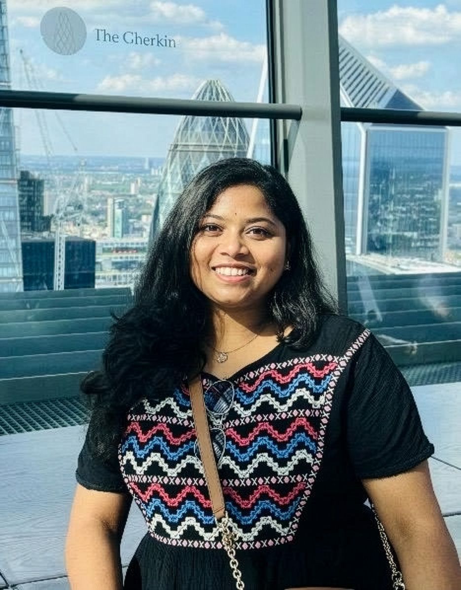

AI Researcher working on Computer Vision, Medical Imaging, and Trustworthy AI — with a growing focus on LLMs, Multimodal AI, and translational applications.

I am a PhD candidate at IIT Kanpur, advised by Prof. Vinay P. Namboodiri at the University of Bath. My research centres on Computer Vision applied to Medical Images — spanning medical image retrieval, segmentation, and uncertainty estimation, with a strong emphasis on building trustworthy and interpretable AI systems.
More recently I have expanded into Large Language Models, Multimodal AI, and AI Agents. I am passionate about translational AI — bridging cutting-edge research with real-world clinical and societal impact. I am actively seeking research positions as an AI Researcher, Research Scientist, or Research Engineer.
Curating multilingual Medical VQA datasets for Indian languages. Exploring VLMs to build a foundation for an Indian-language-capable medical assistant system.
Developing GEC for Indian languages using foundation models. Building curated datasets for fine-tuning and benchmarking, extending toward intelligent language agents.
Exploring Bayesian metric learning and other techniques to quantify retrieval confidence and improve interpretability and diagnostic safety in clinical workflows.
Created a dynamic context-switching network using Swin Transformers that selects optimal spatial context for each image to maximise retrieval performance.
Analysed ViT architectures and contrastive learning for medical retrieval, demonstrating superior performance over CNN baselines with quantitative XAI evaluation.
Developed nine Bayesian ensemble methods for segmentation. Strong correlation between uncertainty and misclassification, enhancing clinical interpretability and trust.
Outside research, I love to dance — good music has a way of taking over, and I've performed at cultural events at IIT Kanpur and during my undergraduate years. I genuinely enjoy conversations and people: some of my favourite moments have come from unexpected discussions across disciplines. I also love to travel — from Japan and Malaysia to Switzerland, Italy, Germany, and the UK — and research has been a great excuse to add Paris, Leeds, and soon Taipei to that list.
I'm open to research collaborations, academic discussions, and opportunities in AI, Computer Vision, Medical AI, LLMs, Multimodal AI, and translational research. Feel free to reach out!
KD 315, Dept. of Computer Science
IIT Kanpur, India 208016